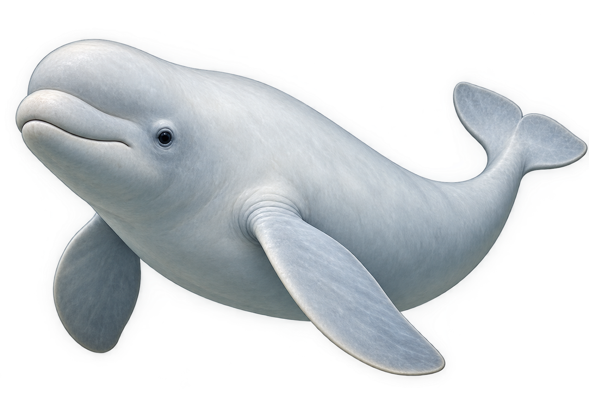
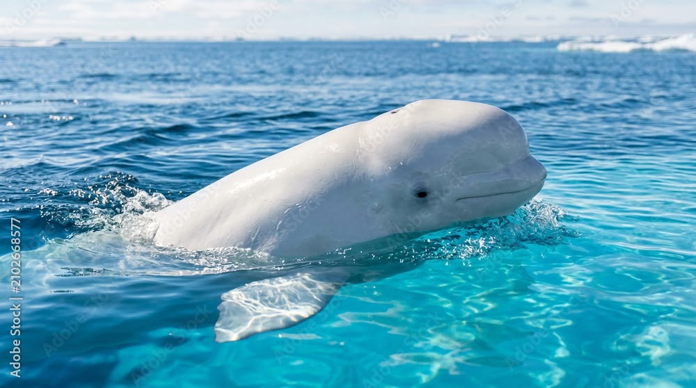
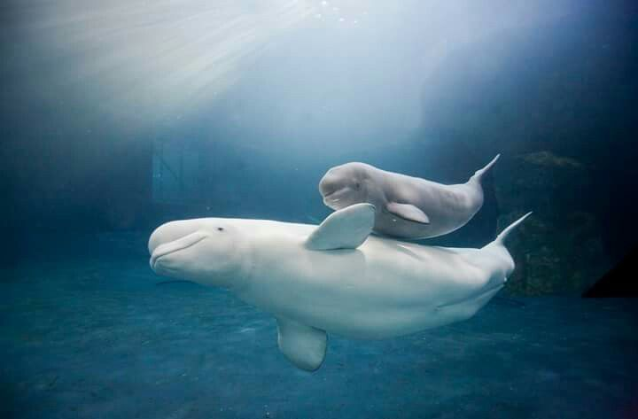
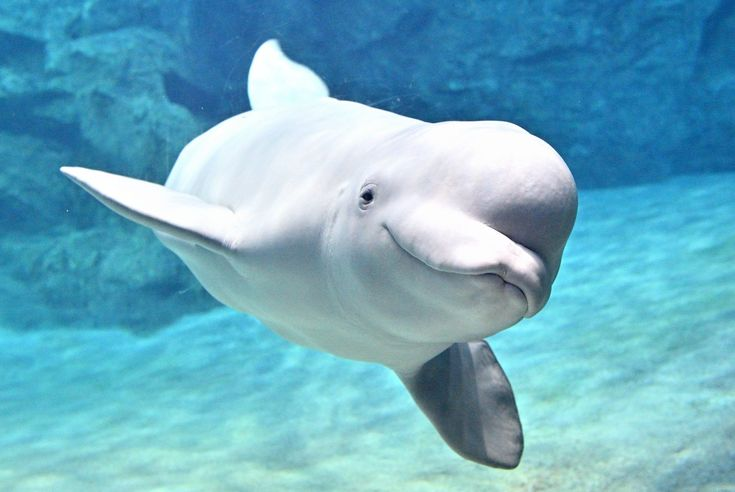

Baleia Beluga
Balaenoptera musculus
A beluga é uma baleia conhecida por sua coloração branca e por viver em águas frias. É uma espécie muito sociável e se comunica por meio de diversos sons.

Curiosidades
Alimentação
Alimentam-se de peixes, crustáceos e outros pequenos animais marinhos.
Tempo de vida
Podem viver entre 35 e 50 anos na natureza.
A Baleia Cantora
As belugas produzem diversos sons para se comunicar, como assobios, cliques e outros chamados. Por isso, são conhecidas como as “canárias do mar”.
Nascimento
As fêmeas dão à luz geralmente a um filhote, que recebe os cuidados e o leite da mãe.
Importantes para o ecossistema
Ajudam a manter o equilíbrio dos ecossistemas marinhos, participando da cadeia alimentar.
Habitat
Vivem principalmente nas águas frias e geladas do Oceano Ártico.


Você Sabia?
As belugas conseguem movimentar o pescoço para os lados, algo incomum entre as baleias.
